6 Überwachte Klassifikation
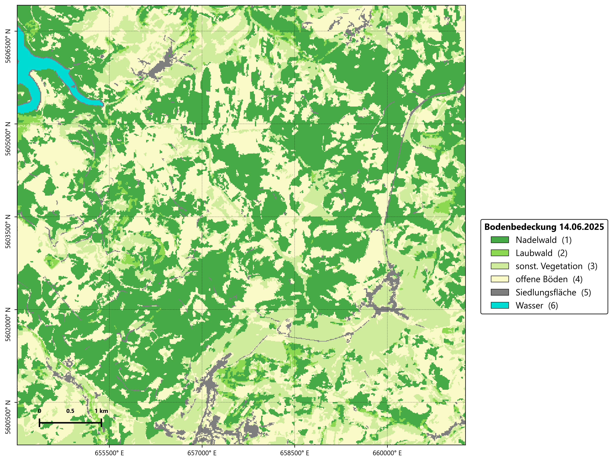
Für die Vorbereitung einer Inventur soll eine Übersichtskarte erstellt werden, die Nadelwald und Laubwald von den wichtigsten Offenland- und Siedlungsflächen trennt. Das Revierteam möchte zunächst erkennen, wo größere zusammenhängende Bestände liegen.
6.1 Random Forest
Die überwachte Klassifikation ist das Herzstück der Fernerkundung. Hierzu gibt es verschiedene Algorithmen, die aus den Pixeln von Referenzflächen lernen und eine kategorische karte erzeugen. Der Random Forest Algorithmus kombiniert im Gegensatz zum einfach Decision-Tree-Verfahren viele Entscheidungsbäume. Jeder Baum stimmt anhand unterschiedlicher Informationen über die Klasse eines Pixels ab. Am Ende entscheidet die Mehrheit über das Ergebnis.
6.2 Datenbasis und Band Set
Nutzen Sie das Band Set der Sentinel-2-Szene vom 14. Juni 2025 aus der Vorverarbeitung (Band Set 1 mit Prefix RT_clip):
- Öffnen Sie QGIS und speichern Sie das Projekt als
einheit_6.qgz. - Öffnen Sie SCP > Band set.
- Aktivieren Sie das Band Set vom 14. Juni 2025.
- Prüfen Sie Reihenfolge und Vollständigkeit der zehn vorprozessierten Bänder.
- Wählen Sie unter Band quick settings > Wavelength den Eintrag Sentinel-2. Kontrollieren Sie anschließend die Wellenlängen.
- Stellen Sie in der Working toolbar unter RGB= zunächst
3-2-1ein. Diese Kombination zeigt mit der Bandreihenfolge des Kurses ein Echtfarbenbild. - Legen Sie zusätzlich den DOP-WMS als Interpretationshilfe unter die Sentinel-2-Daten.
6.3 Klassenschema für Baumarten und Bestandestypen
SCP organisiert Trainingsflächen auf zwei Ebenen:
| Eintrag | Bedeutung |
|---|---|
| MC ID | Nummer der Macroclass und damit der späteren Kartenklasse, zum Beispiel 1 für Nadelwald |
| MC Name | lesbarer Name der Macroclass, zum Beispiel Nadelwald |
| C ID | Nummer einer einzelnen spektralen Variante innerhalb der Macroclass |
| C Name | kurze Beschreibung dieser Variante, zum Beispiel Fichte Nordhang oder Fichte Sonnenlage |
Mehrere Trainingsflächen können unterschiedliche C IDs besitzen, aber über dieselbe MC ID zu einer gemeinsamen Kartenklasse gehören. Beispielsweise können Fichte Nordhang und Fichte Sonnenlage spektral etwas verschieden sein, werden über MC ID 1 jedoch beide als Nadelwald ausgegeben.
| MC ID | Klasse | Beispiel | Hinweise für Trainingsflächen |
|---|---|---|---|
| 1 | Nadelwald | 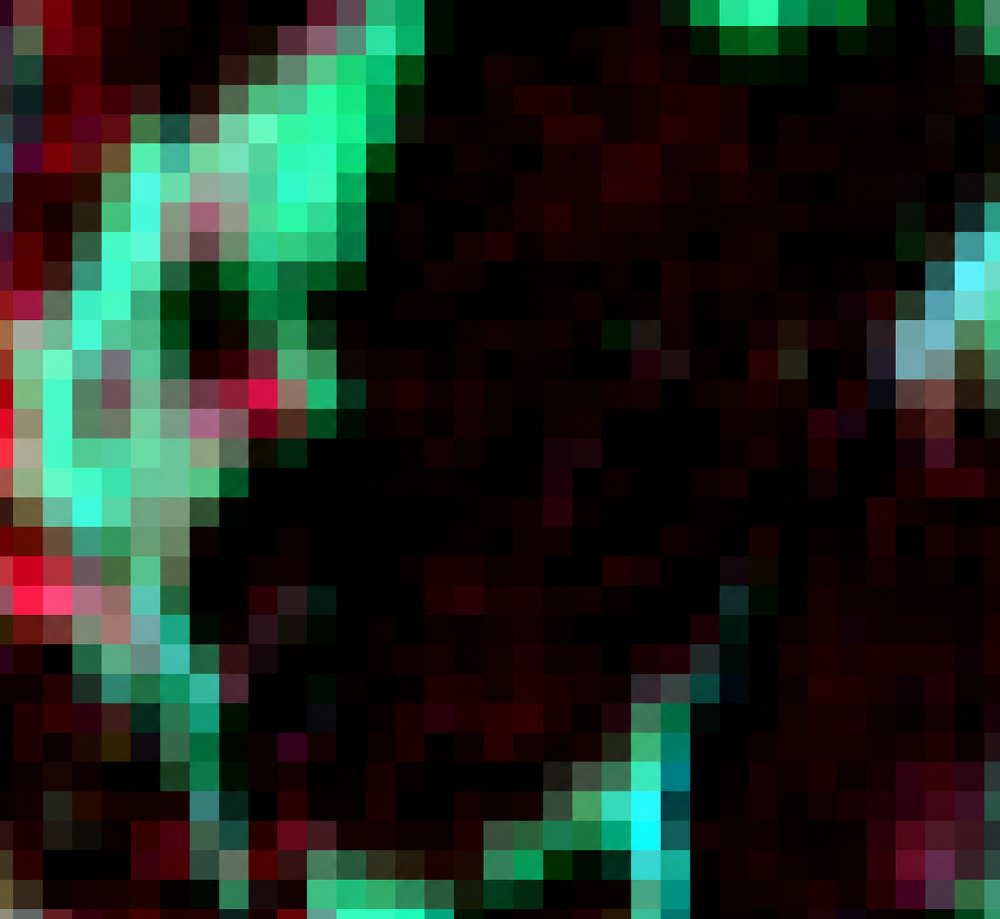 |
dunkler NIR-/CIR-Eindruck, geschlossene Bestände, möglichst homogene Flächen |
| 2 | Laubwald | 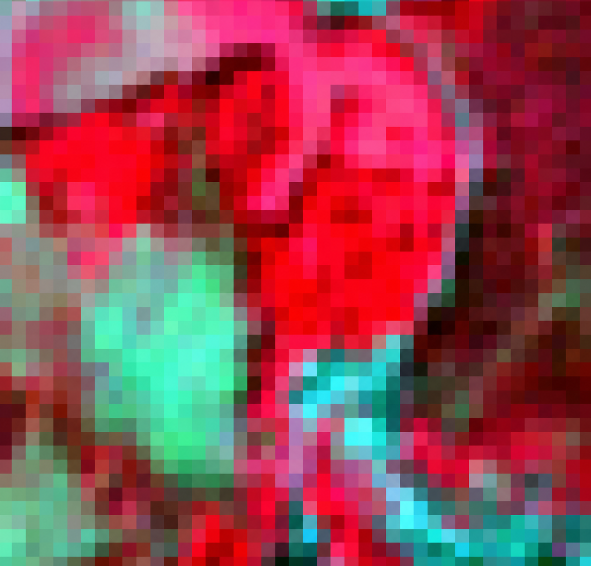 |
stärkere saisonale Dynamik, häufig hellere Vegetationssignatur |
| 3 | sonstige Vegetation | 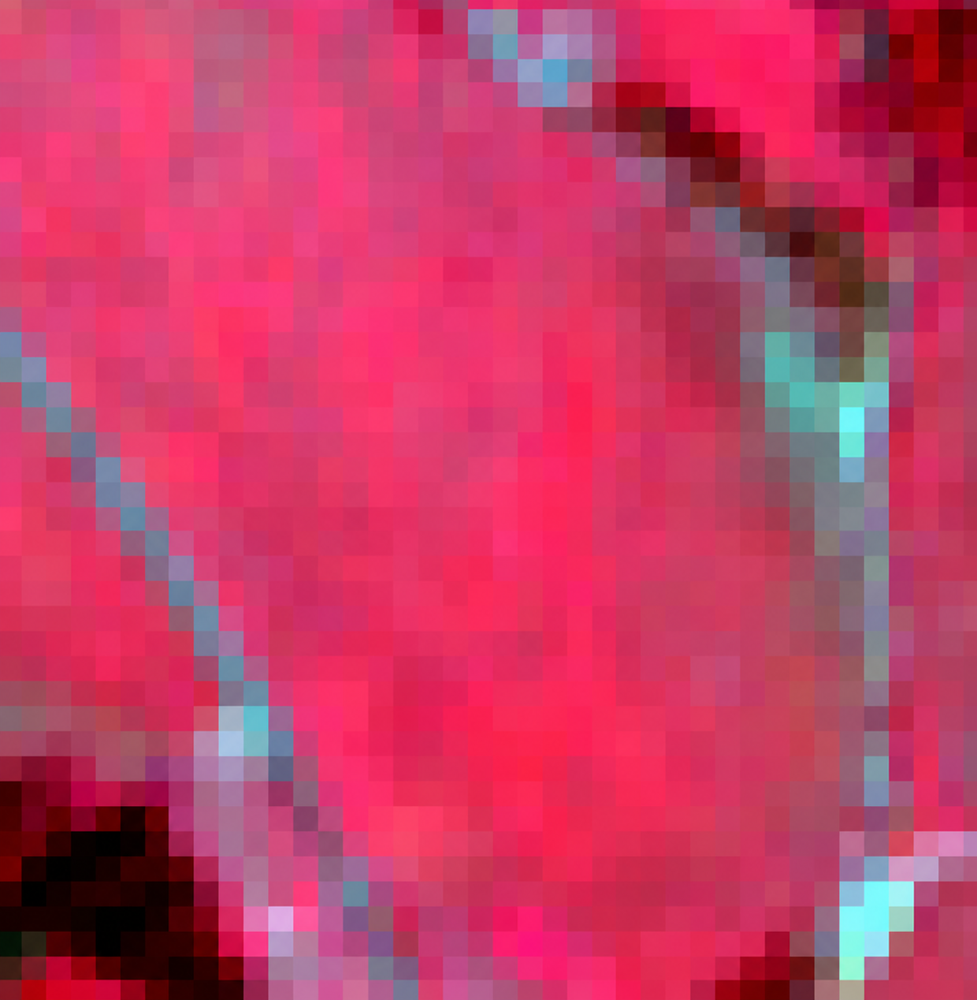 |
Wiesen, Weiden, krautige Vegetation außerhalb geschlossener Wälder |
| 4 | Offene Böden | 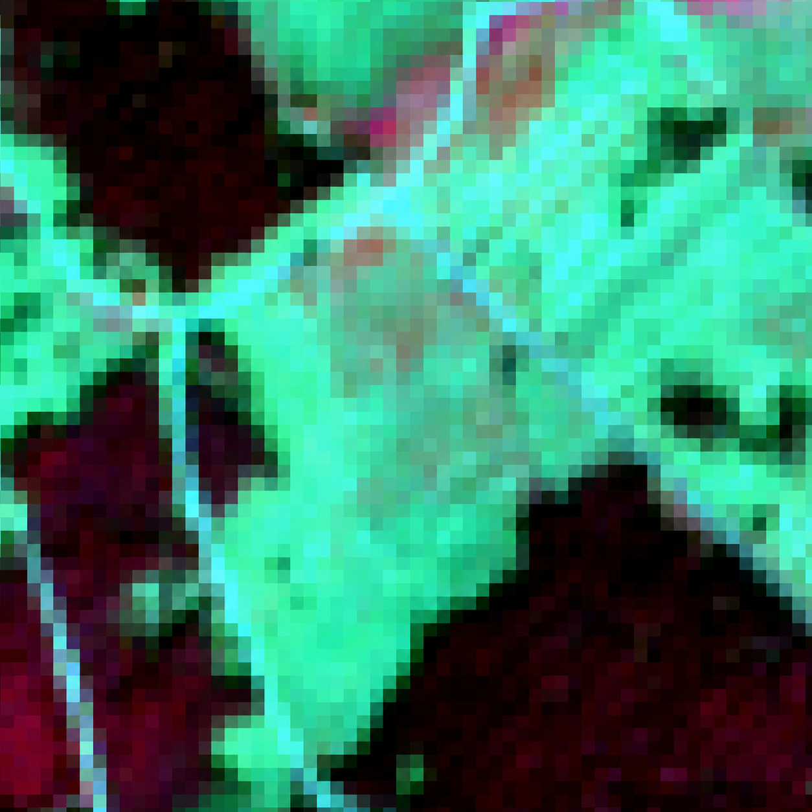 |
unbewachsene oder frisch bearbeitete Flächen, saisonal stark unterschiedlich |
| 5 | Siedlungsfläche | 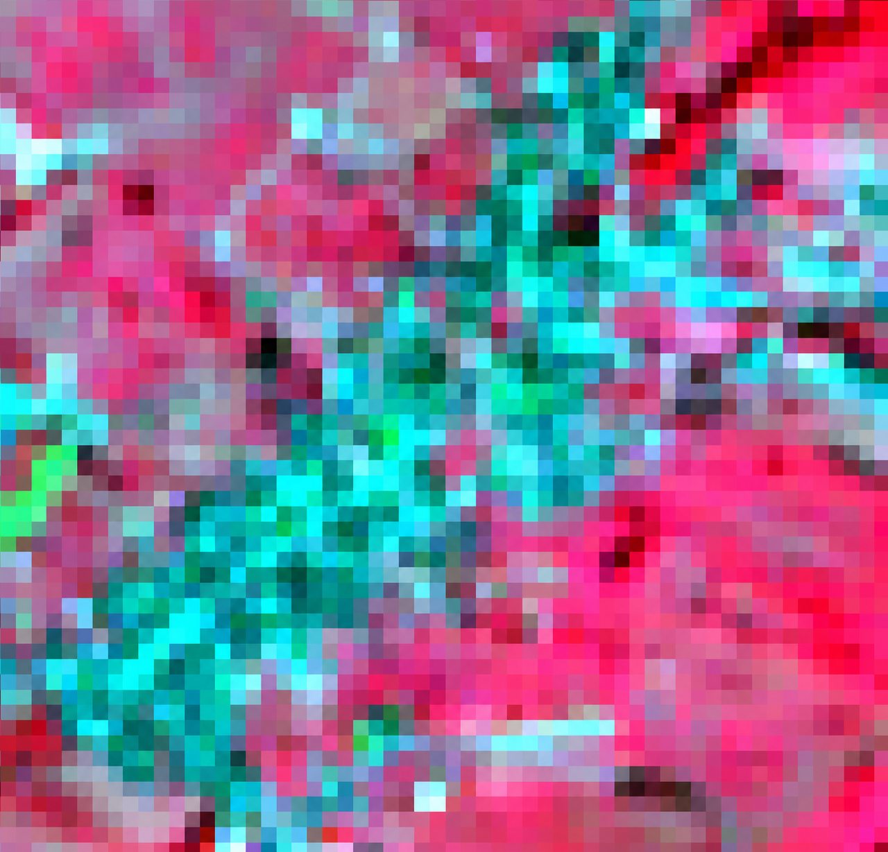 |
Dächer, Straßen und andere befestigte Flächen |
| 6 | Wasser | 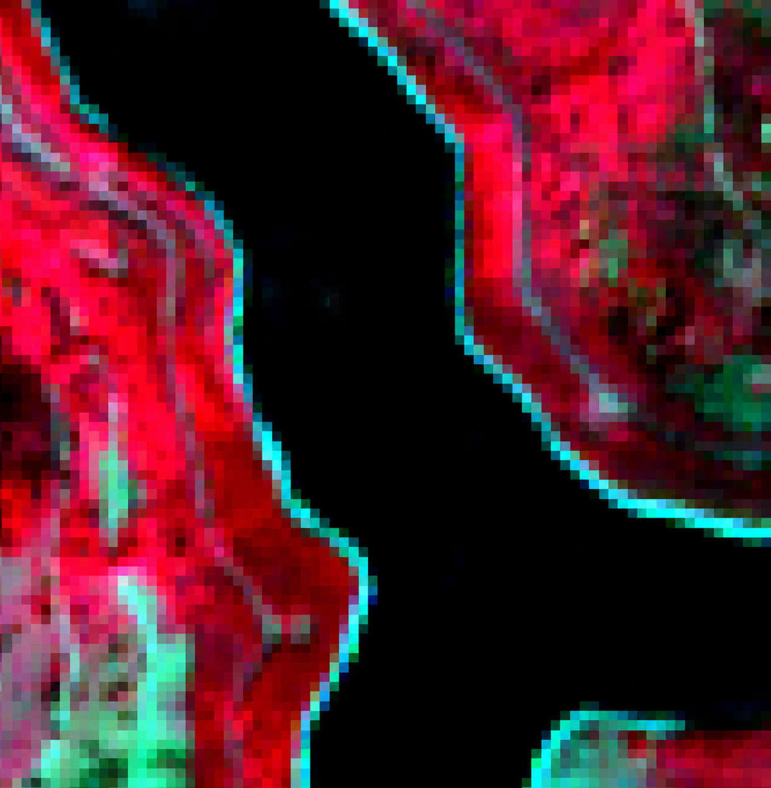 |
sehr dunkle Pixel, Schatten nicht mit Wasser verwechseln |
6.4 Trainingsflächen erstellen
6.4.1 Training input anlegen
- Öffnen Sie den Tab Training input im SCP Dock.
- Klicken Sie oben auf auf Create new training input.
- Speichern Sie die Datei als
04_ergebnisse/S2_20250614/ROI-06142025.scpx. Es entsteht ein neuer Training layer im Layerpanel. Jeder Training Input bezieht sich auf ein bestimmtes Band Set. In unserem Fall Band Set 1. - Aktivieren Sie Autosave, falls die Option angezeigt wird, und speichern Sie zusätzlich regelmäßig das QGIS-Projekt.
- Bearbeiten Sie den Training input ausschließlich mit den SCP-Werkzeugen.
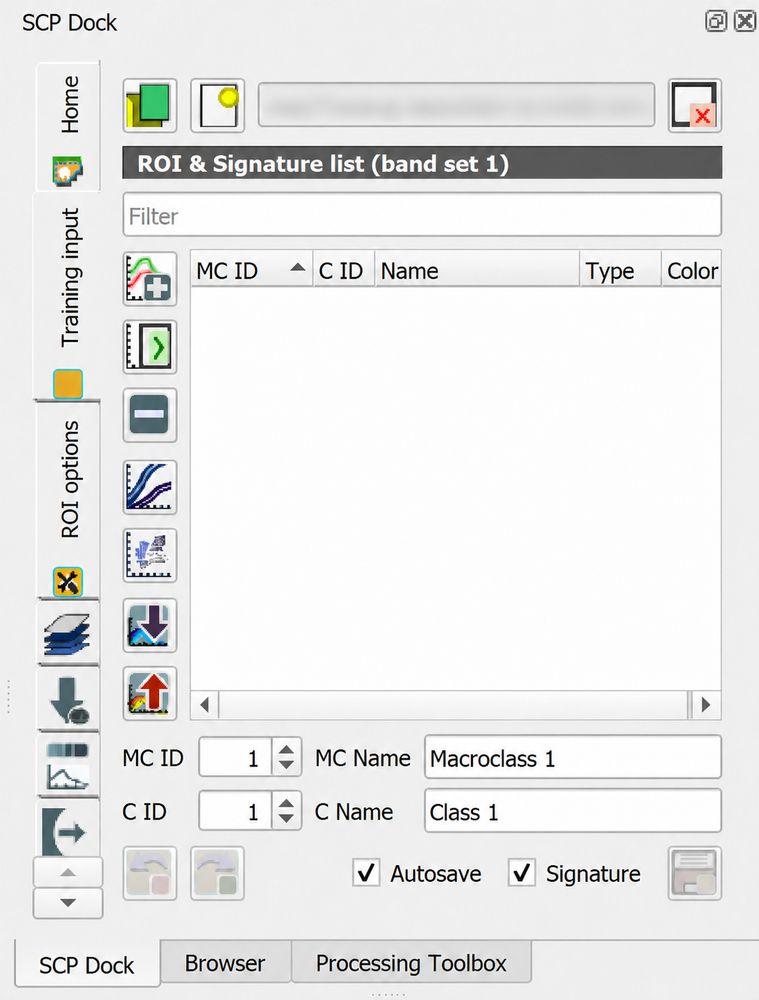
6.4.2 ROIs erfassen
- Zoomen Sie auf eine möglichst eindeutige Referenzfläche.
- Legen Sie im SCP Dock MC ID und MC Name entsprechend dem Klassenschema fest.
- Vergeben Sie für jede neue Trainingsfläche eine eigene C ID und einen kurzen C Name.
- Aktivieren Sie in der Working toolbar das Werkzeug zum manuellen Zeichnen einer ROI.
- Zeichnen Sie ein Polygon innerhalb einer möglichst homogenen Fläche. Schließen Sie das Polygon mit einem Rechtsklick.
- Speichern Sie die ROI im Training input.
- Erfassen Sie je Klasse mindestens fünf räumlich getrennte ROIs.
- Verteilen Sie die ROIs über unterschiedliche Bestände und Bildbereiche.
- Meiden Sie Waldränder, Wege, Schatten, Einzelbäume und deutlich gemischte Pixel.
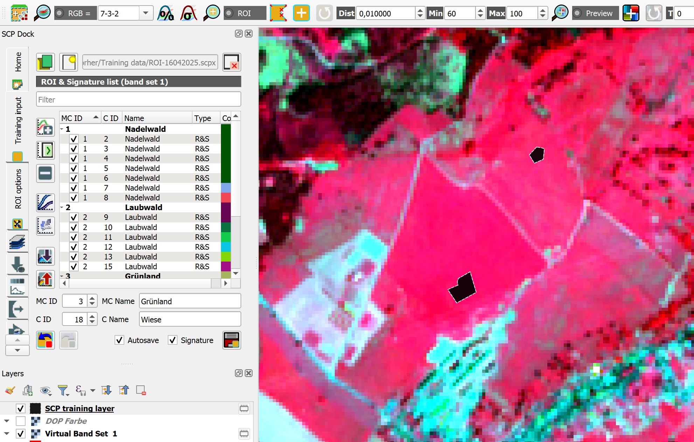
Eine Trainingsfläche sieht im Orthophoto eindeutig aus, liegt in Sentinel-2 aber an einem Bestandesrand. Würden Sie sie verwenden?
6.4.3 ROIs und Klassenfarben prüfen
- Öffnen Sie im SCP Dock die ROI & Signature list.
- Prüfen Sie, ob alle ROIs der richtigen MC ID zugeordnet sind.
- Vergeben Sie für jede Macroclass eine gut unterscheidbare Farbe. Diese Farben werden später für die Klassifikation verwendet.
- Doppelklicken Sie auf einzelne ROIs, um deren Lage erneut zu prüfen.
- Öffnen Sie bei Bedarf den Spectral Signature Plot und vergleichen Sie die Klassen. Überarbeiten Sie ROIs, die deutlich außerhalb ihrer Klasse liegen.
- Ergänzen Sie Klassen, die nur wenige oder räumlich einseitige Beispiele enthalten.
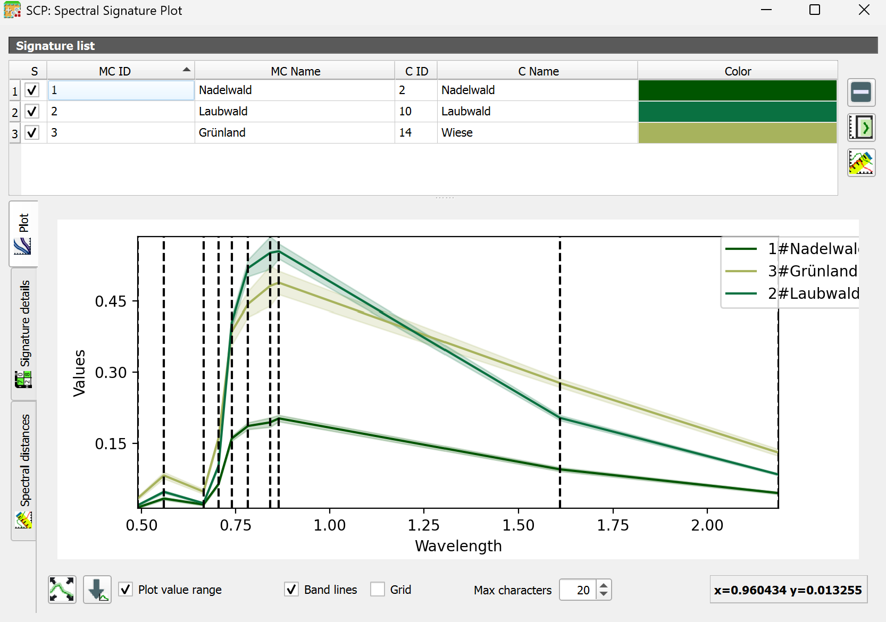
Sonstige Vegetation und Laubwald liegen in mehreren Bändern eng beieinander. Würden mehr Trainingsflächen helfen?
6.5 Klassifikationsvorschau erstellen
6.5.1 Random Forest einstellen
Für den Random-Forest-Klassifikator benötigt SCP das Python-Paket scikit-learn. Schließen Sie QGIS, öffnen Sie unter Windows über das Startmenü die OSGeo4W Shell und führen Sie diesen Befehl aus:
python -m pip install scikit-learnStarten Sie QGIS danach neu. Die Installation ist nur einmal erforderlich.
- Öffnen Sie SCP > Band processing > Classification.
- Wählen Sie unter Select input band set das Band Set vom 14. Juni 2025.
- Aktivieren Sie Use training Macroclass ID. Dadurch entsprechen die Ausgabewerte den MC IDs des Klassenschemas.
- Wählen Sie unter Algorithm den Eintrag Random Forest.
- Tragen Sie zunächst
100bei Number of trees ein. - Belassen Sie Minimum number to split auf
2. - Lassen Sie alle anderen Einstellungen unverändert.
6.5.2 Vorschau vergleichen
- Stellen Sie in der Working toolbar unter Classification preview die Size auf
200. - Aktivieren Sie Classification preview und klicken Sie in einen typischen Ausschnitt des Untersuchungsraums.
- Prüfen Sie die Vorschau anhand von Sentinel- und dem DOP20.
- Erstellen Sie weitere Vorschauen in Wald, Offenland und Siedlungsflächen.
- Ergänzen oder korrigieren Sie ROIs, wenn eine Klasse wiederholt unplausibel erscheint.
Die Vorschau mit 100 Bäumen sieht fast genauso aus wie die mit 10 Bäumen. Spricht das bereits für ein gutes Modell?
6.6 Klassifikation berechnen
- Öffnen Sie erneut SCP > Band processing > Classification.
- Prüfen Sie Band Set, Training input und Use training Macroclass ID.
- Wählen Sie Random Forest und übernehmen Sie die in Abbildung 6.5 gezeigten Einstellungen.
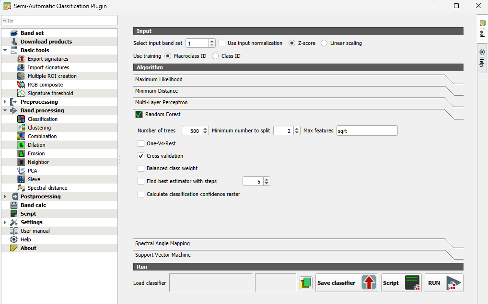
- Klicken Sie auf RUN.
- Speichern Sie die Klassifikation als
04_ergebnisse/S2_20250614/rf_classification.tif. - Speichern Sie im selben Ordner den trainierten Klassifikator über Save classifier
6.7 Ergebnis nachbearbeiten
Klassifikationen enthalten häufig einzelne, verstreute Pixel. Dieser Salt-and-Pepper-Effekt lässt sich mit Sieve reduzieren. Das Werkzeug ersetzt sehr kleine Pixelgruppen durch die Klasse der größten angrenzenden Fläche.
Öffnen Sie SCP > Band set.
Erstellen Sie ein neues Band Set und fügen Sie das Klassifikationsergebnis als einziges Band hinzu.
Öffnen Sie SCP > Band processing > Sieve.
Wählen Sie unter Select input band set das neue Band Set mit der Klassifikation.
Tragen Sie bei Size threshold den Wert
2ein. Damit werden zunächst nur isolierte Einzelpixel ersetzt.Wählen Sie bei Pixel connection den Wert
8. Diagonal benachbarte Pixel gelten damit als zusammenhängend.Tragen Sie als Output name
sieve_ein und lassen Sie Virtual output deaktiviert.Klicken Sie auf RUN und speichern Sie das Ergebnis als
04_ergebnisse/S2_20250614/rf_classification_sieve.tif.Erhöhen Sie den Schwellenwert nur vorsichtig, wenn noch viele isolierte Pixel verbleiben. Mit zunehmendem Wert können auch reale kleine Flächen verloren gehen.
Öffnen Sie SCP > Band set und erstellen Sie ein neues Band Set.
Aktualisieren Sie die Layerliste und fügen Sie nur
rf_classification_sieve.tifhinzu.Aktivieren Sie dieses Band Set. Der nachbearbeitete Sieve-Output ist nun das erste und einzige Band.
6.8 Klassifikationsreport erstellen
Der Klassifikationsreport liefert direkte Hinweise auf die Flächenanteile im Untersuchungsraum. Gerade für Veränderungsanalysen ist er ein geeignetes Mittel zur Flächenbilanzierung.
- Öffnen Sie SCP > Postprocessing > Classification report.
- Wählen Sie unter Select the classification die Datei
rf_classification_sieve.tif. - Aktivieren Sie Use value as NoData und tragen Sie
0ein, falls0in Ihrer Klassifikation den Hintergrund bezeichnet. - Klicken Sie auf RUN und speichern Sie die .csv-Datei ab.
- Prüfen Sie im SCP-Tab Output für jede Klasse Pixelzahl, Fläche und Anteil.
6.9 Ergebnisse darstellen
Zum Abschluss kann aus der nachbearbeiteten Klassifikation eine Karte in QGIS erstellt werden. Der Klassifikationsreport liefert außerdem die Flächenanteile der einzelnen Bodenbedeckungsklassen. Diese Werte lassen sich beispielsweise in Excel oder R als Diagramm darstellen.
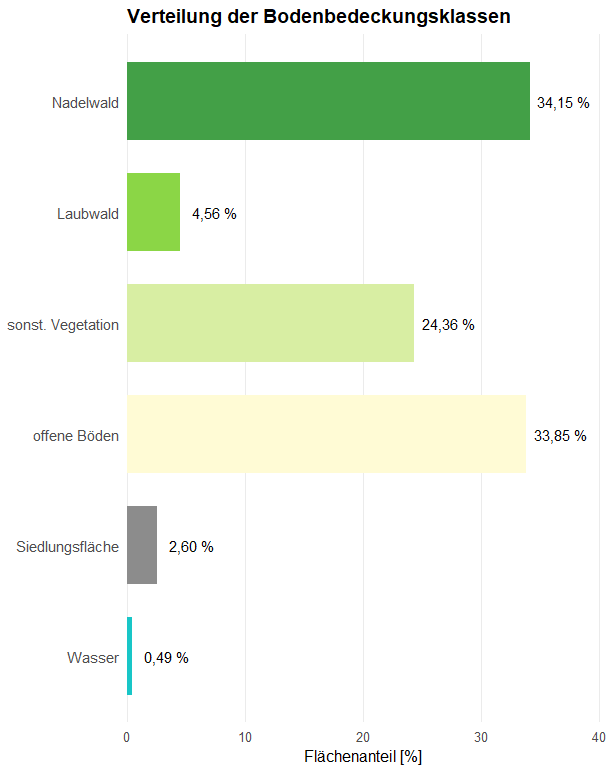